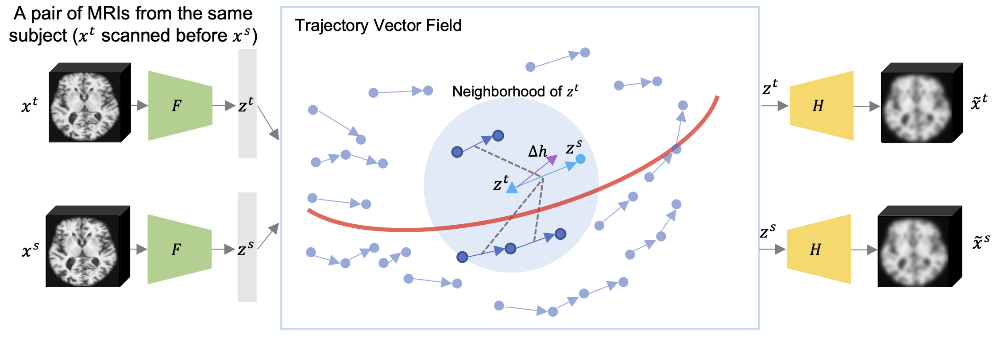
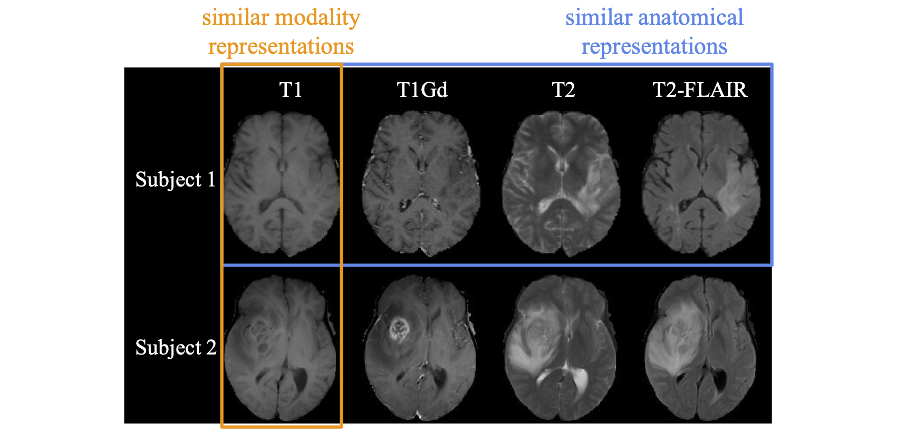
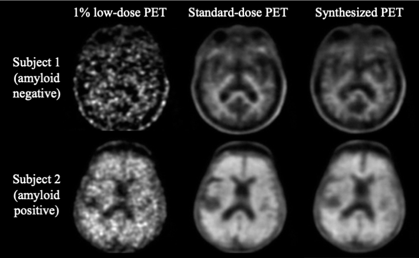

Jiahong Ouyang
I’m a 3-rd year Ph.D. candidate at Department of Electrical Engineering, Stanford University. I am co-advised by Dr. Greg Zaharchuk and Dr. Kilian Pohl. My main research interests are the intersection of machine learning, medical imaging, and medical image analysis, especially on multi-modal and longitudinal analysis for neuroimaging.
Before starting my Ph.D., I received my B.S. in 2017 from Tsinghua University and a M.S. in Robotics in 2018 from Carnegie Mellon University, where I worked with Dr. John Galeotti on tissue interface segmentation on OCT images.
Contact: jiahongo -at- stanford dot edu
[Google Scholar] [Github] [Linkedin]
News
Recent Works
Longitudinal Analysis
Longitudinal MRIs enable noninvasive tracking of the gradual deterioration of brain structure and function caused by neurological diseases and environmental influences over time. We first proposed a CNN+RNN based framework with a longitudinal pooling layer and a consistency loss function to achieve longitudinally and clinically consistent diagnosis prediction. [paper][code]
However, the longitudinal analysis is complicated by the complex covariance structure characterizing a mixture of time-varying and static effects across visits. It generally requires a large number of ground-truth labels, which are often missing or expensive to obtain. To mitigate this challenge, LSSL, a longitudinal self-supervised learning method, was proposed by our group to model the brain aging by a linear direction in the latent space.
But it has two main drawbacks: (1) a linear direction might not have the capacity to model complex longitudinal changes; (2) it can only model diseases/disorders that can be considered accelerated or daccelarated aging. To resolve the first probelm, we further proposed to regularize a smooth trajectory vector field in the latent space. [paper][code] To solve the second problem, we proposed to disentangle a disease progression from the normal brain aging. [paper] [code]
Multi-Modal Analysis
Multi-modal MR images are widely used in neuroimaging applications to provide complementary information about the brain structures. Multi-modal deep learning analysis can be benefit from explicitly disentangling anatomical (shape) and modality (appearance) representations. We proposed a novel margin-based similarity loss and a modified conditional convolution to enable efficient fully disentanglement. We further introduced a fusion function to obtain a set of modality-invariant features for downstream tasks. [paper] [code] [talk]
Low-dose/Zero-dose PET Reconstruction
Positron emission tomography (PET) is a widely used imaging technique in many clinical applications including tumor detection and neurological disorder diagnosis. To obtain high-quality images, the amount of injected radiotracer in current protocols leads to the risk of radiation exposure in scanned subjects. Decreasing this injected dose will lead to low quality images that can further affecting the disease diagnosis. We propose one of the pioneer work that synthesizes high quality and pathologically accurate amyloid PET images solely from 1% ultra-low-dose PET using cGAN with task-specific perceptual loss. [paper] We further attempt to push the boundary to zero-dose PET, i.e., using widely available and non-invasive MRI to synthesize PET images. We propose a U-Net based model with symmetry-aware spatial-wise attention module and channel attention-wise module to accurately capture the abnormality. [abstract]
Publications
Journals
Automated Detection of Arterial Landmarks and Vascular Occlusions in Patients with Acute Stroke Receiving Digital Subtraction Angiography Using Deep Learning
J. Khankari, Y. Yu, J. Ouyang, R. Hussein, H. Do, J. Heit, G. Zaharchuk
Journal of NeuroInterventional Surgery, 2022
Disentangling Normal Aging from Severity of Disease via Weak Supervision on Longitudinal MRI
J. Ouyang, Q. Zhao, E. Adeli, G. Zaharchuk, K. Pohl
IEEE Transactions on Medical Imaging, 2022 [code]
Deep Learning Evaluation of Biomarkers from Echocardiogram Videos
J. Hughes, N. Yuan, B. He, J. Ouyang, ..., D. Ouyang, J. Zou
EBioMedicine, 2021
Tissue at Risk and Ischemic Core Estimation Using Deep Learning in Acute Stroke
Y. Yu, Y. Xie, T. Thamm, E. Gong, J. Ouyang, S. Christensen, M. Marks, M. Lansberg, G. Albers, G. Zaharchuk
American Journal of Neuroradiology, 2021 (Annual Lucien Levy Best Research Article Award)
Longitudinal Pooling & Consistency Regularization to Model Disease Progression from MRIs
J. Ouyang, Q. Zhao, E. Sullivan, A. Pfefferbaum, S. Tapert, E. Adeli, K. Pohl
Journal of Biomedical and Health Informatics (JBHI), 2020 [code]
Generalization of Deep Learning Models for Ultra-low-count Amyloid PET/MRI Using Transfer Learning
K. Chen, M. Schurer, J. Ouyang, M. Koran, G. Davidzon, E. Mormino, S. Tieport, K. Hoffmann, O. Sabri, G. Zaharchuk, H. Barthel
European Journal of Nuclear Medicine and Molecular Imaging, 2020
Use of Deep Learning to Predict Final Ischemic Stroke Lesions From Initial Magnetic Resonance Imaging
Y. Yu, Y. Xie, T. Thamm, E. Gong, J. Ouyang, C. Huang, S. Christensen, M. Marks, M. Lansberg, G. Albers, G. Zaharchuk
Journal of the American Medical Association (JAMA) Network Open, 2020
Accurate Tissue Interface Segmentation via Adversarial Pre-segmentation of Anterior Segment OCT Images
J. Ouyang, T. Mathai, J. Galeotti
Biomedical Optics Express, 2019
Ultra-low-dose Amyloid PET Reconstruction by Generative Adversarial Network with Feature Matching and Task-specific Perceptual Loss
J. Ouyang, E. Gong, K. Chen, J. Pauly, G. Zaharchuk
Medical Physics, 2019
Conferences
Self-Supervised Longitudinal Neighbourhood Embedding
J. Ouyang, Q. Zhao, E. Adeli, E. Sullivan, A. Pfefferbaum, G. Zaharchuk, K. Pohl
Medical Image Computing and Computer Assisted Intervention (MICCAI) 2021 (Oral Presentation, Young Scientist Award Shortlisted, 10 over 1630 papers) [code]
Representation Disentanglement for Multi-modal MR Analysis
J. Ouyang, E. Adeli, K. Pohl, Q. Zhao, G. Zaharchuk
Information Processing for Medical Imaging (IPMI) 2021 (Oral Presentation) [code][talk]
Ultra-low-dose 18F-FDG Brain PET/MR Denoising Using Deep Learning and Multi-contrast Information
J. Xu, E. Gong, J. Ouyang, J. Pauly, G. Zaharchuk, S. Han
Medical Imaging 2020: Image Processing (Oral Presentation)
Task-GAN: Improving Generative Adversarial Network for Image Reconstruction
J. Ouyang, G. Wang, E. Gong, K. Chen, J. Pauly, G. Zaharchuk
MICCAI Machine Learning for Medical Image Reconstruction Workshop (MLMIR) 2019
Fingerprint Pose Estimation based on Faster R-CNN
J. Ouyang, J. Feng, J. Lu, Z. Guo, J. Zhou
International Joint Conference on Biometrics (IJCB) 2017 (Oral Presentation, Best Student Paper Award Runner-Up)
Honors & Awards
- Medical Image Computing and Computer Assisted Intervention (MICCAI) Young Scientist Award Shortlisted (10 over 1630 papers), 2021
- Medical Image Computing and Computer Assisted Intervention (MICCAI) Travel Award, 2020, 2021
- Mind, Brain, Computation and Technology Student Member, Stanford University, 2020
- School of Engineering Fellowship, Stanford University, 2019
- International Society for Magnetic Resonance in Medicine (ISMRM) Trainee Stipend Award, 2018
- IEEE International Joint Conference on Biometrics Best Student Paper Award Runner-Up, 2017
- Scholarship of Academic Excellence, Tsinghua University, 2016
- Scholarship of Social Work, Tsinghua University, 2015
- Scholarship of Voluntary and Public Welfare, Tsinghua University, 2015
Professional Services
Journal Review
- NeuroImage
- Medical Image Analysis (MEDIA)
- IEEE Transactions on Medical Imaging (TMI)
- Scientific Reports
- Pattern Recognition
- Journal of Biomedical and Health Informatics (JBHI)
- IEEE Transactions on Radiation and Plasma Medical Sciences (TRPMS)
- IEEE Access
Conference Review
- European Conference on Computer Vision (ECCV), 2022
- IEEE Conference on Computer Vision and Pattern Recognition (CVPR), 2022
- Medical Image Computing and Computer Assisted Intervention (MICCAI), 2020, 2021, 2022
- IEEE Winter Conference on Applications of Computer Vision (WACV), 2019
Others
- Mentor of computational biology group, AI4ALL, Summer 2021
- Medical Image Computing and Computer Assisted Intervention (MICCAI) Student Board, Professional Events Officer, 2021, 2022
Fun Facts
On my spare time, I like cooking, camping, and body-combat!